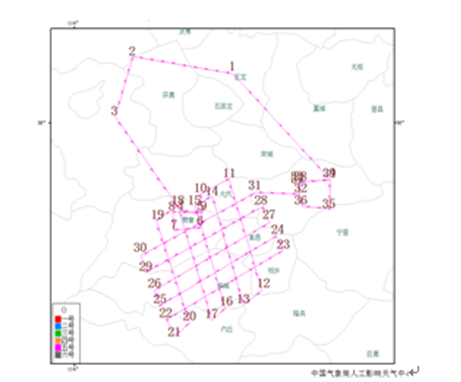
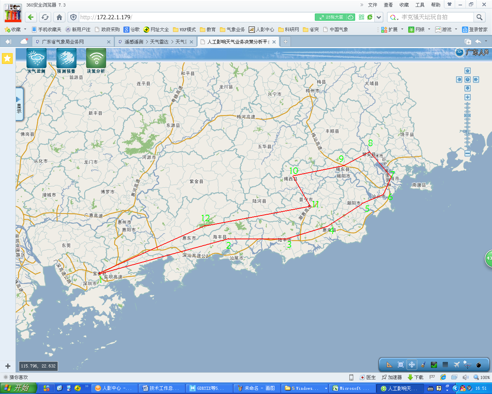

飞机人工增雨作业（探测）方案报
3813号飞机 第9架次 第1次设计
广东省人工影响天气中心 2015年05月17日17时
一、云条件和作业目的
云条件： 层积混合云、单层、不均匀、西南到东北移动，根据条件预警报和08时探测观测得出，冷云区所处高度（3.2-5.5KM）的高空风风速为61.2KM/h，风向为西南。 计5月16日晚到17日白天，粤东地区阴天有大雨局部暴雨。预计08时起，揭阳、汕尾地区会出现明显降水云系、以积层混合云降水为主。
作业目的：增雨（惠州、揭阳、汕尾、汕头、潮州地方政府要求）
文字部分保留模板，值班人员修改。
二、方案设计一
1．飞行区域
5001区、5002区、5003区
2．飞行航线
（1）航线和拐点示意图
 （2）拐点具体经纬度
精确到度分秒，如下表：
| 序号 | 经度 | 纬度 | 地名 |
|---|---|---|---|
| 1 | 113.83° | 22.62° | 深圳宝安机场 |
| 2 | 115.30° | 22.96° | 海丰县 |
| 3 | 115.82° | 22.98° | 陆丰 |
| 4 | 116.18° | 23.07° | 惠来 |
| 5 | 116.45° | 23.3° | 潮阳 |
| 6 | 116.71° | 23.41° | 汕头 |
| 7 | 116.76° | 23.56° | 澄海 |
| 8 | 116.57° | 23.75° | 潮安 |
| 9 | 116.30° | 23.63° | 揭东 |
| 10 | 115.91° | 23.53° | 揭西 |
| 11 | 116.04° | 23.24° | 普宁 |
| 12 | 115．14° | 23.09° | 惠东 |
系统要具有绘制飞行航线图的功能：飞行区域的划分，在地图上依次任意画点后，能够连接成飞行航线，并以表格形式列出经纬度和所属地名。具有自动飞行航线设计功能，按照飞机作业指标体系，将满足作业指标的云区进行耕作式作业航线设计。这些都需要人机交互完成。
3．作业方案
预计飞行时间：2015年05月17日 08:00
预计作业时间：2015年05月17日 08:30
作业高度：3000-3500米（云内0℃层以下）
催化剂类型和剂量：暖云烟条。
4．其他
起降机场：深圳宝安机场
备降机场：白云机场、揭阳机场、汕头机场
飞机作业人员：赵博
地面指挥人员：杨金冬，游积平，高建秋
3、4段文字部分保留模板，值班人员修改。